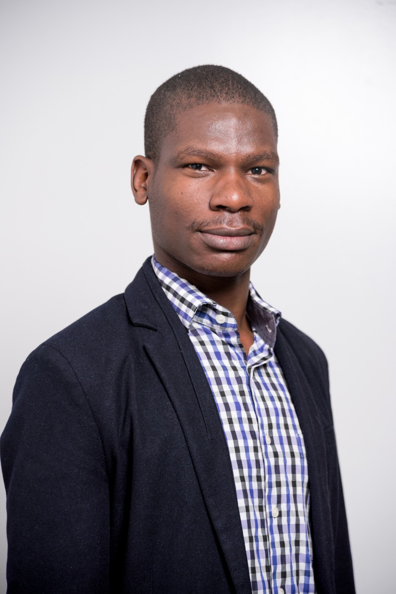

Born in 1994 in Kenya, a fisrt born, christian and left-legged. Football ⚽ used to be my favourite sport but not anymore, how sad! This is because I no longer play. (A long story) How I miss my faovourite no.3 position in the field.
This man is full of hunger to learn, explore and risk all it out. Believes in finding solutions to every problem thrown at him to an extent of feeling miserable when he sleeps knowing there's pending unsolved problem.
I cherish close connections founded on truth, honesty, integrity and loyalty. Hence, you can be able to guess how many friends I have.😀
I'm attaining my SOFTWARE ENGINEER certification by the end of the year. I also have data analysis, visualisation, presentation and modelling skills. I am an ACTUARY, let's say a graduate of Bsc Actuarial Science, because to be an ACTUARY needs more than just a degree. Last but not least, I have driving skills and in possession of a valid driving license. These are enough for your information, email Wamaya for more information.